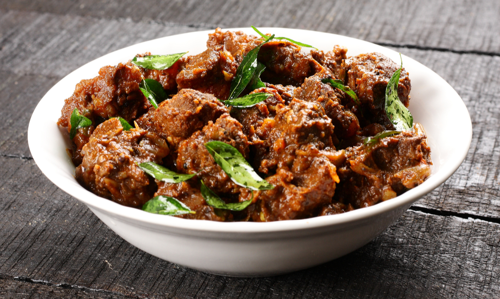

MUTTON CHUKKA!
Mutton chukka is a delicious South Indian dish made with tender pieces of mutton (goat meat) cooked with aromatic spices and herbs. It's typically prepared by marinating the meat with a blend of spices such as turmeric, chili powder, coriander powder, cumin, and garam masala. The marinated meat is then cooked until tender and dry, often finished with a garnish of fresh coriander leaves. Mutton chukka is known for its bold flavors and is commonly served as a side dish with rice, roti, or naan.

INGREDIENTS:
- Mutton (goat meat), preferably bone-in, cut into pieces,
Onions, finely chopped
- Tomatoes, chopped,
Ginger-garlic paste
- Green chilies, slit
Curry leaves
- Turmeric powder,
Red chili powder
- Coriander powder,
Cumin powder
- Garam masala powder,
Salt, to taste
- Oil or ghee,
Fresh coriander leaves, chopped (for garnish)
DIRECTIONS:
- Marinate the mutton: In a bowl, mix the mutton pieces with ginger-garlic paste, turmeric powder, red chili powder, coriander powder, cumin powder, garam masala powder, and salt. Let it marinate for at least 30 minutes to allow the flavors to meld.
Heat oil or ghee in a heavy-bottomed pan or pressure cooker over medium heat. Add the chopped onions and sauté until they turn golden brown.
- Add the slit green chilies and curry leaves to the pan. Sauté for another minute.
Add the marinated mutton to the pan. Cook on medium-high heat, stirring occasionally, until the mutton is browned and the spices are fragrant.
- f using a pressure cooker, add a little water (about 1/4 cup) to create steam. Close the lid and cook the mutton until it's tender. If using a pan, you may need to add more water and simmer until the mutton is tender, stirring occasionally.
Once the mutton is cooked and the gravy has thickened, adjust the seasoning according to your taste preferences.
Garnish with fresh coriander leaves and serve hot with rice, roti, or naan.
TIPS:
Choose the Right Cut: For the best texture and flavor, opt for bone-in mutton pieces with some fat. This adds richness and succulence to the dish.
Marination Time: Allow the mutton to marinate for at least 30 minutes, or even better, overnight in the refrigerator. This helps the meat absorb the flavors of the spices deeply.
Sautéing Onions: Take your time when sautéing the onions. Cook them slowly over medium heat until they turn golden brown. This caramelization adds sweetness and depth of flavor to the dish.
return to home